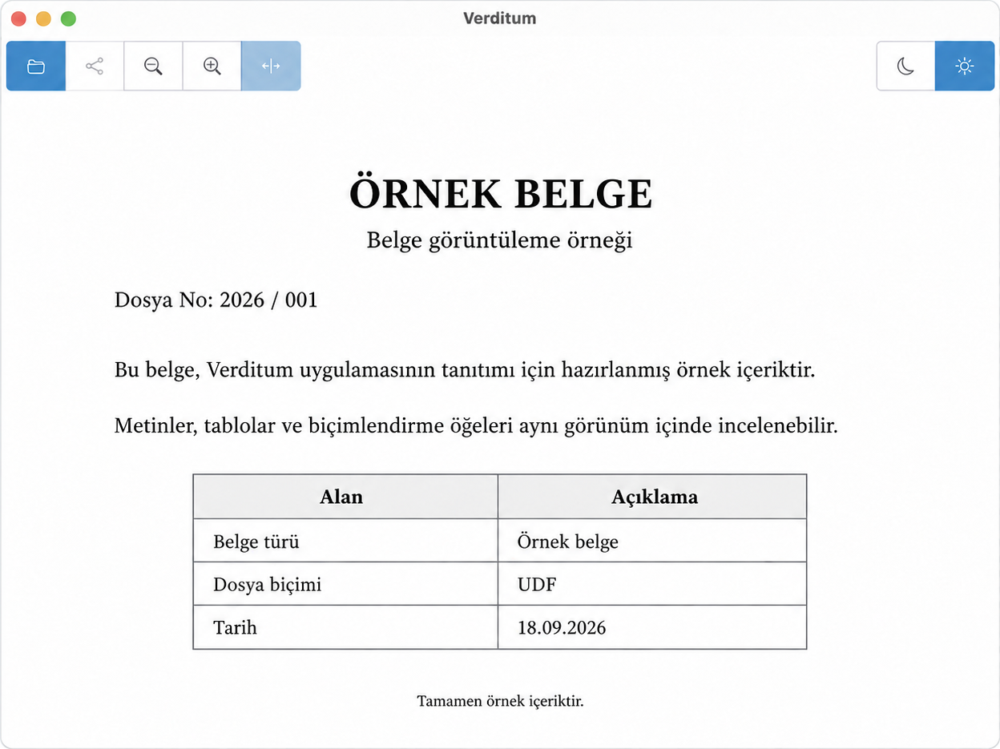

UDF'ye yer açın.
Metinleri, tabloları ve görselleri bir arada inceleyin. Belgenin yazı stillerini ve düzenini takip edin.
UYAP BELGELERİ İÇİN
UDF belgelerinizi okumak için sade bir alan. Verditum ile dosyanızı açın, rahatça inceleyin ve PDF olarak paylaşın.
Ücretsiz. Açık kaynaklı. Belgeleriniz cihazınızda.

DAHA AZ KARMAŞA
Belgeniz ön planda, araçlarınız elinizin altında.
Metinleri, tabloları ve görselleri bir arada inceleyin. Belgenin yazı stillerini ve düzenini takip edin.
Yakınlaştırın, sayfayı pencereye sığdırın. Açık veya koyu temayla rahat ettiğiniz görünümü seçin.
Belgenizi PDF'ye aktarın. Masaüstünde PDF uygulamanızda açın, mobilde paylaşım seçeneklerine ulaşın.
BELGELERİNİZİN YERİ BELLİ
Belge görüntüleme ve PDF oluşturma cihazınızda gerçekleşir. Dosyanızı bir sunucuya yüklemeniz veya hesap oluşturmanız gerekmez.
MERAK ETTİKLERİNİZ
Verditum bir belge görüntüleyicidir. UDF dosyalarını açmak, okumak ve PDF'ye aktarmak için geliştirilmiştir; belge düzenleme veya elektronik imza oluşturma işlemleri sunmaz.
Verditum, desteklenen UDF imzalarının belgenin özgün içeriğiyle eşleşip eşleşmediğini cihazınızda kontrol eder. İmza panelinde sonucu ve sertifikada yazan bilgileri görebilirsiniz. Sertifika güveni, geçerlilik süresi, iptal durumu ve zaman damgaları kontrol edilmez; bu sonuç imzalayanın kimliğini onaylamaz. PDF çıktısı özgün UDF elektronik imzasını taşımaz.
Verditum belge düzenini mümkün olduğunca korur; ancak UYAP Editör'ün birebir karşılığı değildir. Yazı tipleri, sayfalama ve bazı gelişmiş biçimlendirmeler farklı görünebilir. Önemli çıktıları UYAP Editör ile karşılaştırın.
İndirme bölümünden cihazınıza uygun paketi seçin. Önceki sürümleri ve sürüm notlarını GitHub sürümler sayfasında bulabilirsiniz.
Verditum ücretsizdir ve Apache 2.0 lisansıyla sunulur. GitHub deposundan kaynak kodunu inceleyebilir, geliştirmelere katkıda bulunabilirsiniz.
BİR SONRAKİ BELGENİZ İÇİN
Verditum'u edinin, belgenize odaklanın.
Önceki sürümler ve sürüm notları için GitHub sürümler sayfası